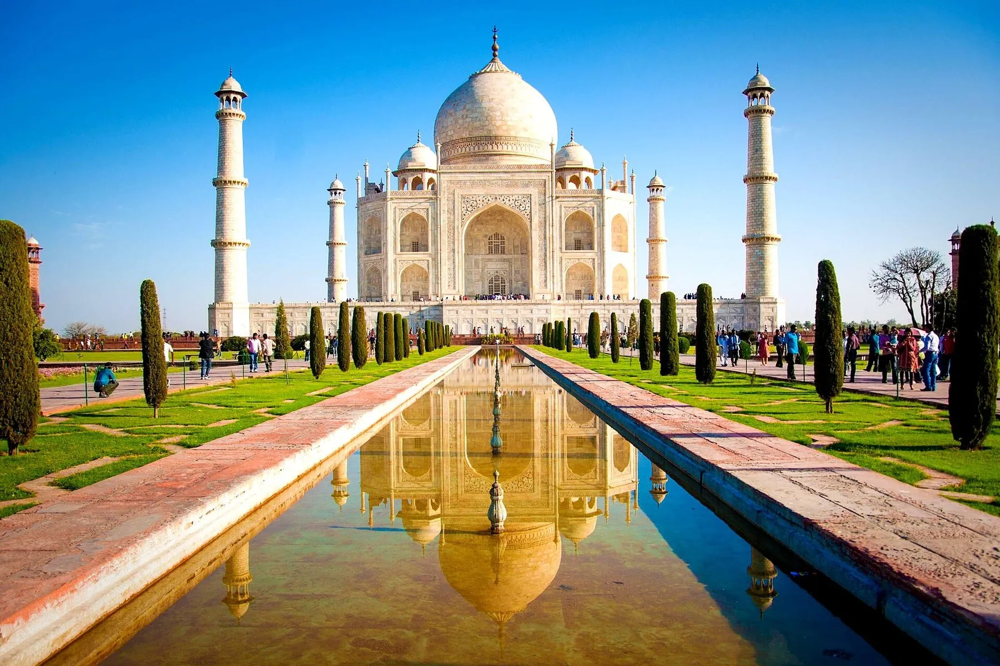
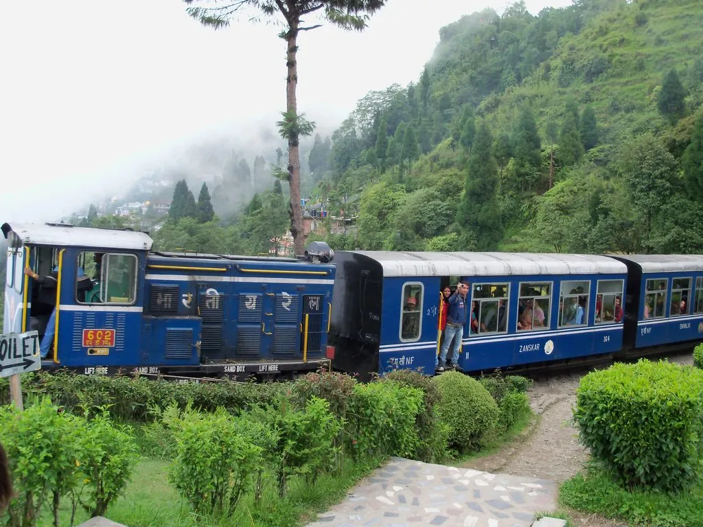
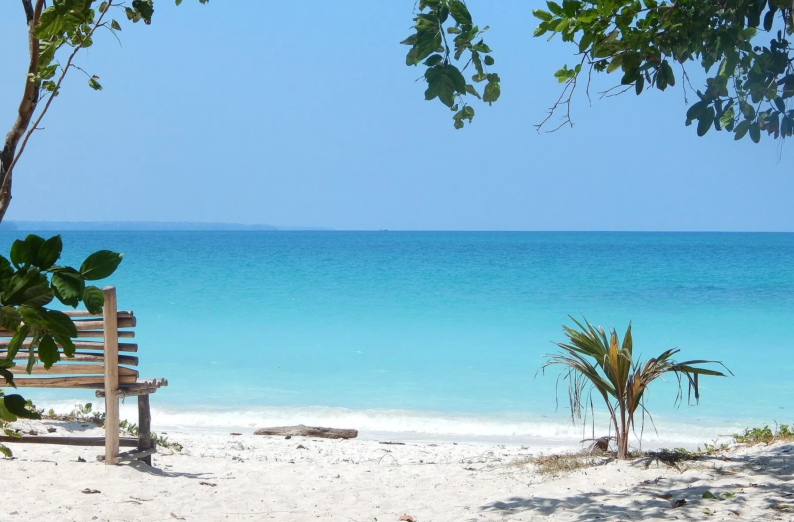

THE SLOW NOTE · KERALA
A day that follows the water.
Some places ask you to do less. On Kerala’s backwaters, the banks, boats and passing moments are the whole point.
Follow the quieter current ↗
Short travel notes for long-lasting memories.
Find the places, little details, and quieter moments that make a journey yours.
Some places ask you to do less. On Kerala’s backwaters, the banks, boats and passing moments are the whole point.
Follow the quieter current ↗
A short old-city walk, one beautiful facade, and enough time to stop for chai.
Follow the morning light
A small train can change how you see a place. Let the journey be the outing, not just a way to get there.
Take the slow way
At Kala Pathar, let a beach walk be enough. Sand, shade and the changing colour of the water need little embellishment.
Wander the shorePrepare a newsletter enquiry in your email app. Add a recipient of your choice; this static journal does not run a mailing service or collect your email.